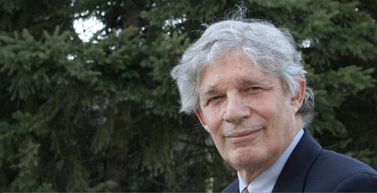

Stuart Kauffman
Stuart Kauffman es un científico de la complejidad, biólogo y médico nacido en Sacramento, USA el 28 de septiembre de 1939. Estudió física en la universidad Darthmouth College, psicoloǵia y fisiología en la universidad de Oxford y medicina en la universidad de California.
Las áreas de investigación que actualmente desarrolla son las siguientes:
- Autoorganización Biológica.
- Redes booleanas aleatorias.
- El origen de la vida.
- Evolución y crítica al neodarwinismo.
Donde algunos de sus trabajos e investigaciones más notables son:
- Modelo NK
- Redes booleanas aleatorias: "orden gratis"
- Posible adyacente
- Conjuntos autocatalíticos
Y entre sus obras más destacadas tenemos:
- Metabolic stability and epigenesis in randomly constructed genetic nets : artículo donde comienza a utilizar redes booleanas aleatorias para modelar redes genéticas.
- The NK model of rugged fitness landscapes and its application to maturation of the immune response: artículo donde presenta formalmente su modelo NK el cual es un modelo matemático que sirve para explicar como evolucionan los genes en conjunto.
- The origin of order: Self-organization and selection in evolution : Libro donde habla como la selección natural y la autoorganización están relacionadas durante la creación de la complejidad de los sistemas biológicos.
- At home in the universe: The search for the laws of self-organization and complexity : libro divulgativo donde habla del papel de la autoorganización en la teoría de la evolución además de la emergencia en sistemas complejos adaptativos y su relación con el origen de la vida.

Sobre el orden gratis
El orden gratis que propone Kauffman es un fenómeno que emerge de manera espontánea de un sistema cuando alcanza cierto nivel
de complejidad. Él lo define como una aparción espontánea de orden, en un sistema complejos, sin necedad de la selección
natural o de otras fuerzas externas.
Para explicar este fenómeno usa una analogía con botones e hilos. Si fijaramos 1000 botones sobre una tela para después unir
dos botones al azar con un hilo y luego repetimos el proceso varias veces tomando nuevamente dos botones de manera aleatoria
se observaría que al principio solo se mostrarán pares de botones conectados por un hilo pero conforme vayan aumentando los
pasos, en algún momento apareceran pequeñas configuraciones de uniones y si se sigue avanzando, espontáneamente se pordrá
observar que todos los botones están conectados en una red gigante.
Después lo aplica a el origen de la vida, donde las moléculas muestran la capacacidad de autoorganización espontánea que
produce la creación de vida. Sin embargo, Kauffman no niega la selección natural sino que menciona que está generación
espontánea es un complemento pues que sin está vida generada, la selección no tendría sobre que trabajar.
Finalmente, propone que los tres motores que provocan la evolución de la biosfera son: la autoorganización(orden gratis),
la selección natural y el azar.
Comentarios finales
Como alguien que desconocía del tema, es interesante conocer el trabajo de Kauffman y cómo usa los sistemas complejos para estudiar el origen de la vida, aunque también sería interesante ver el otro lado de la moneda y ver el desarrolló de las teorías biológicas a través de la matemática tradicional. También considero importante conocer la manera en la que Kauffman sustenta con hechos su teoría pues la mayoría de sus resultados vienen de simulaciones computacionales.
Referencias
- Castrodeza, C. (1997, septiembre). La evolución sin Darwin. La biología ultramontana. Revista de Libros. https://www.revistadelibros.com/la-teoria-de-la-evolucion-segun-brian-goodwin-y-stuart-kauffman/
- Wikipedia contributors. Stuart Kauffman. Wikipedia, The Free Encyclopedia https://en.wikipedia.org/w/index.php?title=Stuart_Kauffman